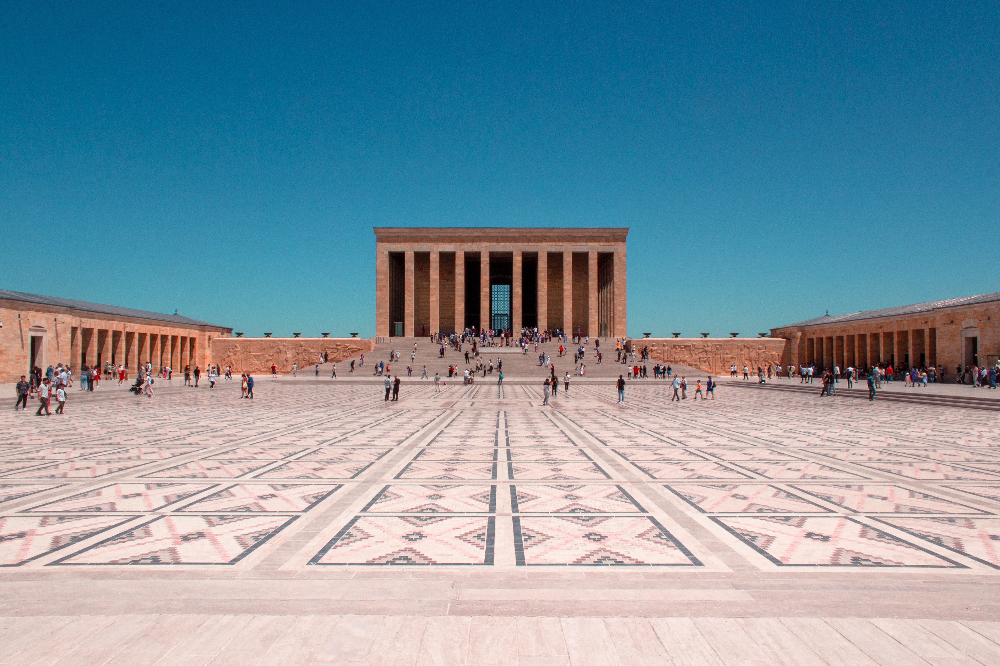

Tarihçe
Ankara ilk çağlardan itibaren, farklı medeniyetlerin hüküm sürdüğü bir coğrafya ve sürekli bir yerleşmeye sahne olan bir kent… Bugünkü Ankara kentinin kapladığı bölge ve çevresinde yapılan araştırmalar sonucundaki arkeolojik buluntular, Paleolitik dönemden başlamak üzere, Neolitik ve Bakır Çağı boyunca bölgede devam eden toplu yaşamın kültür değerleri olarak kabul edilmişlerdir. Dolayısıyla şehrin yerleşik düzeni çok eskilere dayanmaktadır fakat bütün arkeolojik bulgulara rağmen şehrin kim tarafından ve ne zaman kurulduğu kesin olarak bilinmemektedir.
Ankara ve çevresinin Hititler tarafından ele geçirildiği ve bölgede yerleşik düzene geçtikleri düşünülmektedir. Mürted ovası yakınında Bitik’te bir Hitit yerleşmesi saptanmış ve yapılan kazıda eski Hitit dönemine ait bir yerleşim yeri açığa çıkarılmıştır. Ayrıca, Ankara’nın 60 km güneybatısındaki Gavurkale kalıntıları da Hitit döneminin izleri olarak karşımıza çıkmaktadır.
Hititlerden sonra bölgeye, Frigler hakim olmuştur. Kentteki ilk önemli yerleşmenin Frigler döneminde olduğu tahmin ediliyor. Eski çağ kaynaklarında, efsanelerde, Ankara’nın kurucusu olarak Frig Kralı Midas kabul edilir. Frigler, bölgeye “gemi çıpası” anlamındaki “Ankyra” ismini veriyorlar. Frigler’in başkenti olan Gordion, bugünkü Polatlı ilçesi sınırları içerisinde yer alan Yassıhöyük Köyünde yer almaktaydı.
Friglerden sonra, Ankara ve çevresi, Lidyalıların eline geçmiştir. Lidyalılardan sonra bölgede, Persler egemen olmuştur. Lidya ve Pers döneminde, “Ankyra”ya ilişkin bilgilerimiz sınırlı olsa da, dönemin tamamına ilişkin bilgiler, Ankara’nın önemini göstermektedir. Pers Kralı I. Dareios döneminde yapılmış “Kral Yolu”nun Ankara’dan geçmesi, kenti ticari ve askeri açıdan önemli merkezlerden biri haline getirmişti.
Makedonya Kralı Büyük İskender’in Doğu’ya yaptığı seferler sonucunda bölgede, Persler’den sonra Makedonyalılar hakimiyet kurar. Kaynaklarda, İskender’in, Gordion şehrinden geldiği ve bir süre bölgede ikamet ettiği belirtiliyor.
M.Ö. III. yüzyılda yöreye, Galatlar yerleşir. Ankyra, Galat akıncılarının bir boyu olan Tektosagların başkenti olur.
Roma İmparatoru Augustus’un M.Ö. 25’te, Galatya’yı Roma egemenliği altına alması üzerine, Ankyra, Roma’nın eyaleti Galatya’nın başkenti olmuştur. Bu süreçte, bölge, önemli askeri bir üs haline gelir.
Roma İmparatorluğu’nun ikiye bölünmesinden sonra kent, Doğu Roma İmparatorluğu’nun sınırları içerisinde kalmıştır. Ankara, Bizans döneminde de askeri ve lojistik önemini korumuştur. Bizans döneminde, birçok hakimiyet mücadelesine sahne olan Ankara, çeşitli hakimiyet kurma girişimlerine rağmen 1073’e kadar Bizanslıların hakimiyeti altında kalmıştır.
Selçuklu Hükümdarı Alparslan’ın 1071’de gerçekleşen Malazgirt Meydan Muharebesinde kazandığı zafer ile Türklerin Anadolu’daki kitlesel yerleşimleri başlamıştır. Selçuklular, 1073’te, Malazgirt Zaferinden iki yıl sonra, Ankara’yı feth etmişlerdir. Malazgirt’ten sonra, kent birçok kez Selçuklular, Danişmentliler ve Bizanslılar arasındaki hakimiyet mücadelesine sahne olmuştur. Sultan Alaeddin Keykubat’ın hüküm sürdüğü dönem, Selçukluların en parlak devridir ve kentbu dönemde, büyük imar çalışmalarına sahne olmuştur.
Moğolların Anadolu’yu istilasının ardından, 14. yüzyıl başlarında kent İlhanlıların hakimiyeti altına girmiştir. Kent, Osmanlılar’a geçmeden önce bir süre Ahiler tarafından yerel bir yönetimle yönetilmiştir. Selçuklu Beyleri arasındaki güç savaşları ve Haçlı Seferleri sebebiyle sekteye uğrayan Türkleşme sürecinde önemli rol oynamışlar ve başta Ankara olmak üzere, Anadolu’nun Türkleşmesine katkıda bulunmuşlardır.
Nihayet, Osmanlı topraklarına dahil olan Ankara, bu dönemde de, sınır kenti işlevini sürdürmüştür.
Kentin “Ankyra” adı, İslami devirlerde “Engürü” ve “Angora” biçimlerinde karşımıza çıkarken, kent, 1402 yılında Çubuk Ovasında yapılan Ankara Savaşı’na sahne olmuş ve Ankara bir süre Timur kuşatması altında kalmıştır. Timur’un Anadolu’dan ayrılışından sonra, Mehmet Çelebi, Fetret Devri’nin sonunda padişahlığını ilan edince, Ankara’yı tekrar Osmanlı egemenliği altına almıştır.
Balkan Savaşı ve I. Dünya Savaşı sonrasında güç kaybeden Osmanlı Devleti’nin merkezinin İstanbul’da kalması tehlikeli görülerek başkentin Anadolu’da başka bir kente taşınması konusu gündeme gelmişti. 27 Aralık 1919’da Mustafa Kemal Paşa ve Müdafaa-i Hukuk Cemiyeti Heyeti Temsiliyesi, Ankara’ya gelerek bir tebliğ ile tüm mebuslara toplantının Ankara’da yapılacağını duyurmuştu.
23 Nisan 1920 tarihinde kurulan Türkiye Büyük Millet Meclisi, hükümet merkezini Ankara olarak ilan etmişti ve Ankara, İstiklal Savaşı’nın idare edildiği bir merkez haline gelmişti. 13 Ekim 1923’te çıkarılan kanun ile Ankara resmen yeni Türkiye’nin yeni başkenti olarak ilan edildi. Böylece kentin bugünkü gelişiminin de önü açılmış oldu.
Milli Mücadele’nin sembol şehri Ankara’da, 29 Ekim 1923’te Cumhuriyet’in ilanından sonra hızla imar çalışmalarına başlandı. Köklü bir tarihe ve zengin bir kültürel mirasa sahip, pek çok medeniyete ev sahipliği yapmış bu güzel ve kadim şehir, yapılan ilk imar çalışmalarıyla daha yeni ve farklı bir görünüme kavuşmuş oldu ve bir kent olarak gelişiminin ilk adımları atılmış oldu.